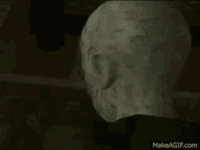

O primeiro Resident Evil
Resident Evil, conhecido como Biohazard no Japão, é uma franquia de mídia criada por Shinji Mikami e desenvolvida pela produtora Capcom como uma série de videojogos de survival horror, ação, tiro em terceira pessoa e primeira pessoa. A franquia retrata histórias sobre incidentes biológicos e virais e posteriormente expandiu-se para uma série de filmes em live-actions, animação, história em quadrinhos, figuras de ação entre outros produtos.
O jogo homônimo foi criado por Shinji Mikami e Tokuro Fujiwara e lançado para o console Playstation em 1996. Foi um título importante por ter definido o gênero survival horror nos jogos eletrônicos e também por ter influenciado de, forma parcial, na popularização da temática zumbi na cultura popular. Com o lançamento de Resident Evil 4 (2005), a franquia mudou o seu gênero para uma jogabilidade mais dinâmica presenciada em jogos eletrônicos de tiro e popularizou a visão "over-the-shoulder" (acima do ombro, em tradução livre) muito presente em jogos em terceira pessoa. No lançamento do jogo Resident Evil 7: Biohazard (2017), a franquia retornou com o clima de terror de sobrevivência, agora em uma perspectiva em primeira pessoa.
Resident Evil tornou-se a franquia de jogos eletrônicos mais vendida da Capcom e uma das principais do gênero de jogos de terror de sobrevivência, com 117 milhões de unidades vendidas em todo o mundo. A franquia tem sido bastante influente na cultura popular, sendo de inspiração na indústria de videogame, cinema e televisão.
Jogabilidade
<< volltarResident Evil é baseado no jogo Sweet Home,[3] o qual é baseado no filme japonês Suiito houmu (Sweet Home), que foi lançado apenas no Japão em 1989 para o Famicom (Nintendo Entertainment System). Resident Evil herdou muito dos elementos Sweet Home incluindo a mansão, os quebra-cabeças e até a tela de carregamento na forma de uma porta que se abre.
Enquanto os jogos iniciais da série foram anunciados no mercado asiáticos e ocidentais sob o título BioHazard, a ramificação americana da Capcom mudou o título para Resident Evil alguns meses antes do lançamento. Apesar de nenhum motivo oficial para a mudança ter sido divulgado, é dito que o motivo para a troca foi referente a uma infração de propriedade intelectual.
A maioria dos jogos da série são na perspectiva em 3ª pessoa, vendo todos os personagens por cima enquanto eles se movem por cenários pré-renderizados. Apesar de Resident Evil ter sido um dos primeiros jogos a usar este estilo de jogo nos consoles, a técnica foi primeiramente usada na série de jogos para PC, Alone in the Dark que também é citado como o primeiro jogo do gênero survival horror. Esses cenários estáticos agradaram muito os fãs, apesar de CODE: Veronica X, Resident Evil 4 e, mais recentemente, Resident Evil 5, Resident Evil 6 e Resident Evil 7 terem apresentados cenários em tempo real.
Alguns dos jogos permitem ao jogador escolher de um a dois personagens, os quais afetarão em que partes da história serão revelados segredos adicionais, pequenas missões, armas e finais destraváveis após completar o jogo com ambos personagens.A série Resident Evil é controversa quanto ao uso de violência, mutilações e sangue, que são vistos por todo jogo, do começo ao fim. Cada jogo começa por uma mensagem avisando que "Este jogo contém cenas sangrentas e de violência explícita" ("This game contains scenes of explicit violence and gore"). Deve ser notado que a violência no jogo, diferente da série Grand Theft Auto, é praticamente exclusiva com ameaças biológicas e, apenas duas vezes, o jogador teve que lutar e matar outro ser humano (os quais, em geral, eram vilões). De qualquer modo, os personagem do jogador são humanos e suas mortes são bem detalhadas – especialmente no Resident Evil 4 e Resident Evil 5, onde o protagonista pode ser decapitado, partido ao meio e outros detalhes. A tela de Game Over também acrescenta a isso as palavras "You Died" ou "You are Dead" (“Você Morreu” ou “Você está morto”) em uma fonte de sangue.
Jogos
<< volltarOs primeiros três jogos são: Resident Evil, Resident Evil 2 e Resident Evil 3: Nemesis. Todos foram lançados para PlayStation. O primeiro jogo foi adaptado para o Sega Saturn, enquanto ambos Resident Evil 2 (o único Resident Evil para Nintendo 64) e Resident Evil 3 foram lançados para o Sega Dreamcast e Nintendo GameCube. Todos os três foram adaptados para PC. Algumas dessas adaptações adicionam conteúdo exclusivo e características não presentes nos originais. A série iniciou sua sexta geração com Resident Evil CODE: Veronica X para Sega Dreamcast. CODE: Veronica foi, posteriormente, adaptado para PlayStation 2 e, depois, para Game Cube, na forma de uma versão atualizada chamada Resident Evil CODE: Veronica X.
Depois de CODE: Veronica X, o criador da série, Shinji Mikami, e a Capcom assinaram um contrato de exclusividade para a série com a Nintendo. Isto significou o lançamento com exclusividade para o console da Nintendo, na época o GameCube, do remake do Resident Evil original, Resident Evil, com novos gráficos e algumas novas locações, assim como o relançamento dos demais títulos da série (Resident Evil 2, Resident Evil 3 - Nemesis e Resident Evil CODE Veronica X) para o console, além de mais dois títulos novos, o prólogo da série Resident Evil 0, e a "continuação" Resident Evil 4, ambos com exclusividade para o GameCube. Após o termino do contrato, a Capcom relançou Resident Evil 4 para outros consoles, incluindo o popular PlayStation 2, sendo que este jogo também foi o primeiro da série a ser lançado para PC. De fato, Resident Evil 4 foi o jogo mais popular da série, ganhando versões inclusive para celulares e o console Zeebo; e com o surgimento de uma nova geração de consoles, ele voltou a ser relançado, inicialmente com a Wii Edition,[4] que fazia uso dos controles de movimento do novo console da Nintendo, e posteriormente com a versão HD, para Xbox 360 e Playstation 3. Em 2014, o jogo voltou a ser relançado, com a versão Ultra HD, para PC, Xbox One e Playstation 4. No dia 5 de agosto de 2014, a Capcom anunciou que iria lançar uma remasterização em HD do remake do título original (Resident Evil) para o GameCube lançado em 2002 e traze-lo para o Playstation 3, Playstation 4, PC, Xbox 360 e Xbox One no início de 2015.
Uma adaptação melhorada do Resident Evil original para portátil, chamada Deadly Silence, foi lançada para Nintendo DS, para comemorar o aniversário de 10 anos da série. O jogo aproveita as capacidades únicas da tela sensível do Nintendo DS (e em uma parte, do microfone embutido). Os usos para a tela sensível incluem as sequências de luta com facas, na qual os jogadores usam a tela sensível para atacar os inimigos, e alguns puzzles novos ou modificados que façam uso dela. O microfone é usado para reanimar companheiros por respiração "boca-a-boca" , quando ele é assoprado. Entre outras vantagens, o jogo inclui um mapa fixo, no qual o jogador pode ver, além do mapa, sua munição e seu sangue (baseado nas cores do fundo), sempre, e sua faca está sempre equipada (gatilho esquerdo).O último jogo da série principal é o remake de Resident Evil 4 lançado em 2023 para Microsoft Windows, PlayStation 4, PlayStation 5 e Xbox Series X/S.